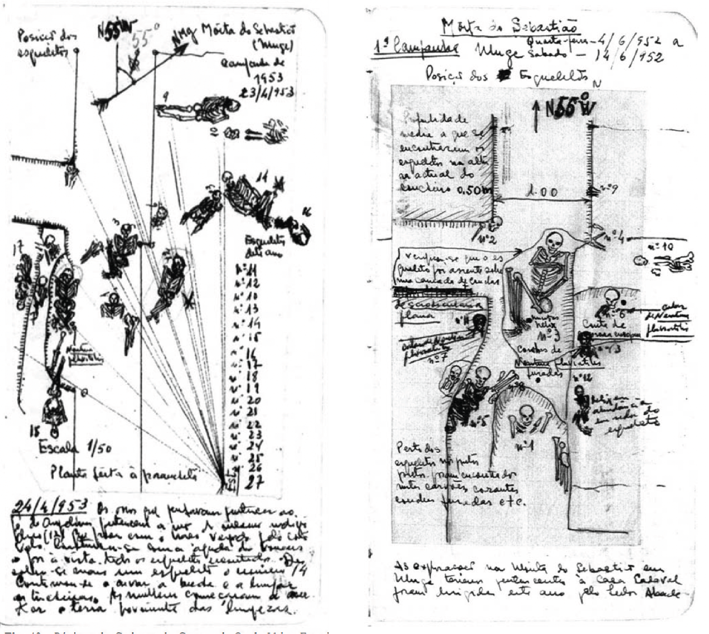
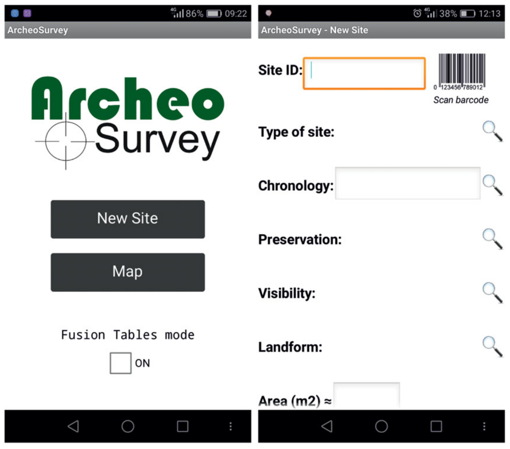
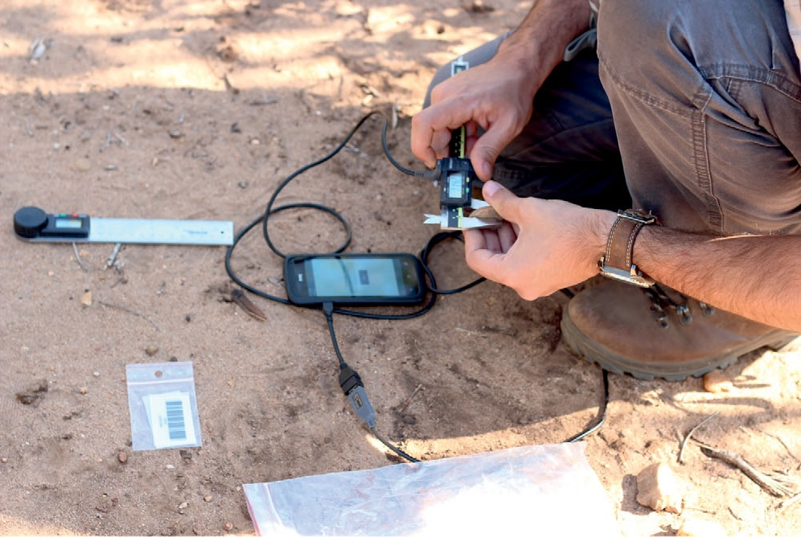

1 Introdução
1.1 O registo em Arqueologia: do físico ao digital
Embora a opção preferencial para o registo arqueológico seja a sua preservação in situ, a maior parte das realidades com que o arqueólogo se depara não permitem esta conservação. Muitos dos sítios arqueológicos são destruídos, tapados ou transformados após a intervenção. A escavação de um sítio arqueológico é, desta forma, uma experiência que não se pode voltar a repetir e, portanto, a importância do registo exato de todas as suas particularidades deve ser a principal preocupação do arqueólogo.
As abordagens atuais ao processo de registo durante a escavação arqueológica prevêem, sobretudo, e de uma forma o mais lógica possível, ligar todos os elementos díspares de um sítio arqueológico no âmbito do registo espacial tridimensional. Naturalmente, a escavação arqueológica não é uma prática precisa, uma vez que existe muito espaço para ambiguidade. O processo de escavar e registar um sítio arqueológico é uma mistura curiosa entre intuição, interpretação e rigor científico (Lock 2003). O resultado desse processo é um arquivo composto por dados escritos, desenhados e fotografados dos objetos escavados e da sua relação espacial. Esta preservação por registo tem como principal vantagem o facto de que esse arquivo estará acessível para análise, interpretação e futuras reinterpretações. Coletivamente, esse registo fornece o contexto dos achados feitos, ou seja, os padrões específicos de associação física que os relacionam entre si e com os sedimentos em que foram encontrados (Mitchell 2018).
No entanto, para garantir sucesso neste processo é essencial que os dados estejam estruturados e guardados de forma lógica e sem ambiguidades. O uso crescente de computadores e, particularmente, de software de Sistemas de Bases de Dados, tem sido fundamental para o desenvolvimento dos sistemas de registo de escavação nas últimas décadas.
Devido às particularidades dos sítios arqueológicos e às diferentes ideias e objetivos das equipas de investigação e responsáveis, conhecemos hoje um conjunto muito alargado de sistemas de registo. Ainda assim, é possível reconhecer alguns conceitos-chave e requisitos-chave que integram, atualmente, a maior parte dos trabalhos de escavação. Um destes conceitos é, por exemplo, o da Matriz de Harris (Harris 1997) nomeadamente o da conceptualização do registo de contextos únicos, em que um contexto é qualquer evento natural ou antrópico que pode ser distinguido no registo arqueológico.
As primeiras abordagens ao registo de escavação consistiam em texto descritivo, notas curtas e esquemas anotados nos cadernos de campo, produzindo um tipo de registo que é difícil de armazenar e, principalmente, de analisar de forma objetiva, por ser pouco lógico na sua estrutura e não ter sentido explícito Fig. 1.1. O início da busca por cumprir com estes dois últimos requisitos foi aquando da introdução das folhas proforma de registo de campo Fig. 1.2. Ainda hoje, em várias escavações, é comum ter vários formulários de registo que representam várias classes diferentes de informação, e.g. formulários de contexto, formulários de contextos especiais, formulários individuais de achados, etc.

No entanto, aspectos como a ilegibilidade, folhas de dados incompletas e discrepâncias entre observadores são alguns dos inúmeros desafios que os arqueólogos enfrentam quando recolhem dados no terreno utilizando métodos estritamente analógicos. Por outro lado, frequentemente, os arqueólogos lamentam as horas despendidas a preencher formulários, que consomem um tempo valioso que poderia ser dedicado a outras tarefas.
Por estas razões, atualmente, muitos destes formulários foram substituídos por abordagens totalmente digitais ao trabalho de campo arqueológico. De facto, a completa digitalização de dados está a tornar-se um requisito prático para todo o trabalho de campo e de laboratório (Austin 2014; Kintigh et al. 2014; Ogburn 2010). Várias entidades de financiamento e tutelares de Património e Arqueologia, obrigam os profissionais a apresentarem uma estratégia para o arquivo e divulgação a longo prazo de todos os dados criados durante a investigação. Em Portugal, por exemplo, a Direção Geral do Património Cultural (DGPC) exige a submissão dos dados recolhidos em todos os trabalhos de campo em suporte físico e digital, para efeitos de preservação dos dados a longo prazo. A digitalização é frequentemente vista como proporcionadora de uma maior flexibilidade através da sua separação entre função e forma, entre conteúdo e meio, na forma como pode quebrar as fronteiras entre os dados, encoraja e apoia uma utilização dinâmica e colaborativa e proporciona mais oportunidades para a recombinação de dados e a criação de novos conjuntos de dados. Kaufmann and Jeandesboz (2017) sugerem uma série de possibilidades digitais, muitas das quais diretamente relacionadas com a utilização e relação com os dados. Estas incluem a maleabilidade e flexibilidade dos dispositivos digitais, as suas capacidades de armazenamento, a sua capacidade de pesquisa, a sua conetividade, a sua computabilidade, a sua natureza interactiva e a sua criação e organização de dados. A combinação de todos estes fatores, e não só, cria um ambiente indiscutivelmente atrativo para a produção, transformação, consumo e criação de conhecimento a partir dos dados.
No trabalho arqueológico, a transição para a recolha e gestão de dados de forma totalmente digital é uma inevitabilidade, dadas as características dos instrumentos de medição utilizados atualmente no campo e no laboratório. A adoção generalizada da Estação Total em trabalhos de escavação e prospecção (Bernatchez and Marean 2011; McPherron and Dibble 2002), por exemplo, resultou no armazenamento totalmente digital dos dados espaciais, seja na memória interna do equipamento, seja em computadores ligados por cabo ou por bluetooth ao equipamento topográfico. Este último cenário tem frequentemente levado ao desenvolvimento de software próprio para estabelecer essa ligação e cumprir com necessidades muito específicas em Arqueologia - ver, por exemplo, as soluções disponibilizadas em www.oldstoneage.com/osa/tech/index/. No laboratório, por outro lado, quase todos os equipamentos utilizados para leitura, registo e análise de materiais arqueológicos são, hoje em dia, completamente digitais. Até mesmo o paquímetro, um instrumento amplamente utilizado para obter medições lineares de objetos, tem versões digitais desde o final da década de 1980 que permitem a sua ligação a um computador, e com um simples pressionar de botão, as medidas são enviadas de forma imediata para o campo da base de dados utilizada. Um campo particular onde a digitalização total dos dados tem estado particularmente ativa nos últimos anos é o da utilização de dispositivos móveis (i.e., smartphones e tablets) para recolha de dados no campo e no laboratório (Averett, Gordon, and Counts 2016; Cascalheira, Gonçalves, and Bicho 2014). A razão para tal é bastante simples: estes dispositivos integram, à partida, ferramentas que são essenciais para o trabalho arqueológico. Componentes como chip de GPS, câmara fotográfica e capacidade de comunicação via bluetooth tornam os dispositivos móveis equipamentos eficazes para registar localizações de sítios arqueológicos, registar achados fotograficamente ou comunicar com equipamentos de topografia para registo de coordenadas durante os trabalhos de escavação. Um dos melhores exemplos da aplicação destas ferramentas, em conjunto com software personalizado, foi o desenvolvido por Cascalheira, Bicho, and Gonçalves (2017) com base em serviços da Google e no sistema operativo Android. Esta solução, criada para registar, gerir e partilhar dados de prospecção arqueológica no âmbito de um projeto de investigação sobre a Idade da Pedra em Moçambique, foi concebida para ser totalmente integrada e personalizável (Fig. 1.3). O núcleo do sistema é constituído por duas aplicações personalizadas para dispositivos móveis, como smartphones ou tablets, desenvolvidas através do MIT App Inventor. Com estas aplicações, os prospetores conseguem obter coordenadas geográficas e dados relevantes de locais com vestígios arqueológicos e ainda realizar análises de artefactos in situ, incluindo medições precisas com paquímetros digitais conectáveis diretamente aos dispositivos móveis (Fig. 1.4). Todos os dados recolhidos são armazenados na memória interna dos dispositivos, bem como, originalmente, numa base de dados espacial baseada na nuvem (a já extinta Google Fusion Tables). Esta base de dados permitia a partilha automática e análise dos dados, utilizando um conjunto bastante intuitivo de ferramentas de visualização para a criação imediata de mapas e gráficos exploratórios.


1.2 A análise quantitativa em Arqueologia
Os avanços na tecnologia digital não se limitaram apenas ao equipamento e à rapidez e eficácia com que recolhemos dados arqueológicos. No que concerne ao processamento e análise, os desenvolvimentos informáticos das últimas duas décadas possibilitam, atualmente, que qualquer pessoa, independentemente da sua experiência, aplique facilmente métodos quantitativos ou estatísticos a um determinado conjunto de dados.
Na maior parte dos casos, quando se fala de estatística a um grupo de alunos de Arqueologia, a reação tende a ser de receio e surpresa, uma vez que, frequentemente, estes alunos referem terem escolhido as Humanidades como forma de “fugir à matemática”. Contudo, os cálculos matemáticos envolvidos na análise quantitativa ou estatística, por mais simples ou complexos que sejam, são hoje considerados uma coisa do passado. Atualmente, nenhum estudante ou profissional de Arqueologia precisa de realizar manualmente cálculos como a média ou o desvio padrão de um conjunto de dados. Em vez disso, praticamente todos os cálculos são automaticamente realizados pela miríade de pacotes de software estatístico disponíveis. Naturalmente, isso torna a pesquisa estatística muito mais acessível, rápida e exacta.
Certamente, a matemática está envolvida nos cálculos estatísticos, bem como nas representações gráficas e interpretações. No entanto, a estatística é mais uma abordagem lógica para fazer inferências sobre a natureza de toda uma população com base numa amostra dessa população, o que (de um modo geral) envolve a análise de factos numéricos. Embora nunca seja demais saber um pouco de matemática, não é necessário ser um génio da matemática para realizar uma investigação estatística sólida e coerente (McCall 2018).
O grande avanço no pensamento estatístico ocorreu no final do século XIX e início do século XX, quando cientistas como Karl Pearson e Ronald Fisher começaram a pensar na forma como os investigadores poderiam avaliar as relações entre amostras e populações através do desenvolvimento de uma melhor compreensão matemática de questões como a distribuição, a variância e a probabilidade. Alguns destes cálculos, como o cálculo dos desvios-padrão para a avaliação da variância, são de facto bastante simples. Outros, como a modelação de distribuições estatísticas utilizando funções matemáticas, são bastante complexos. A questão é que as perguntas sobre a relação entre amostras e populações são, na verdade, questões de lógica, e a matemática só entra em jogo quando realizamos cálculos para avaliar estas questões.
Dito isto, como argumentado por (McCall 2018), é possível fazer uma investigação estatística sólida utilizando o software sofisticado que está atualmente disponível, mesmo sem compreender toda a matemática envolvida nos cálculos estatísticos selecionados. Como analogia, é um pouco como conduzir um carro sem compreender completamente todos os pormenores do funcionamento do motor de combustão interna. Contudo, existem ainda muitas coisas que podem correr mal nesta situação e, tal como acontece com a condução de um automóvel, são necessárias algumas competências para obter bons resultados. Acima de tudo, os arqueólogos que utilizam métodos quantitativos precisam sempre de conhecer as circunstâncias em que devem usar certos modelos e abordagens, e isso requer um conhecimento prático dos diferentes tipos de dados que podemos recolher. Em Arqueologia, temos duas formas principais de quantificar no nosso trabalho: 1) contando “coisas” classificadas como pertencentes a tipos específicos ou outras classes de fenómenos; e 2) medindo “coisas” de forma padronizada (medidas lineares, peso, composição, etc.). O objetivo fundamental destes procedimentos de quantificação é facilitar comparações sistemáticas entre as populações de “coisas” provenientes de diferentes contextos, como, por exemplo, as coleções de artefactos de diferentes sítios arqueológicos ou de diferentes unidades estratigráficas de um mesmo sítio arqueológico. Assim, é inevitável constatar que a Arqueologia se baseia fortemente na quantificação. Em parte, isto está relacionado com a gama limitada de “coisas” às quais os arqueólogos têm acesso para fazer observações. Ao contrário de, por exemplo, os antropólogos culturais, que são capazes de fazer observações diretas sobre o amplo e complexo meio de interações sociais no mundo humano, a investigação arqueológica concentra-se principalmente no estudo das relações entre certas “coisas” e outras certas “coisas”.
A quantificação e a análise quantitativa são instrumentos cruciais para caracterizar estas relações de forma sistemática, permitindo uma avaliação mais aprofundada do seu significado.